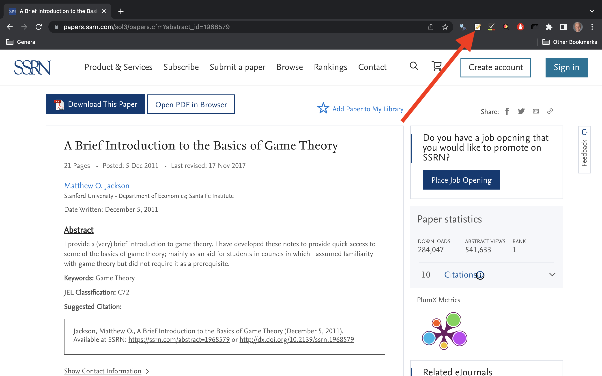
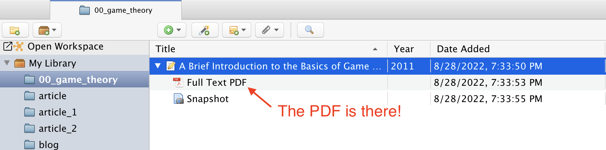
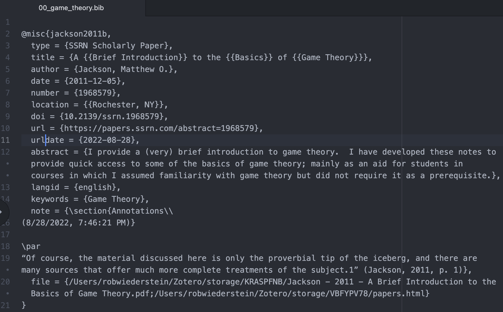

Download
Go to Zotero’s website and download the lastest edition.

Choose a connector. A Zotero connector will make your life easy. The “connector” is a shortcut accessible via your browser window. Connectors are available for Safari, Chrome, Firefox and Edge. (My browser of choice is Chrome).

Plugins are third-party extensions for Zotero. Go to the plugins page. For LaTeX, install the Better BibTeX plugin. The repository comes with extensive documentation.

For those who use Word, choose the plugin for word processors.

Launch the Zotero Application. The window should be empty with a tab for “My Library”. (You won’t see the “Open Workspace” tab).
Go to the most downloaded paper on SSRN (Social Science Research Network). Add it to the Zotero library collection “00_game_theory” using the Zotero Connector extension. In Chrome, I added the Zotero Connector to the extension bar because I use it often.

Highlight the collection of choice and click “Done”.

Open the Zotero window again and see if the connector added the paper to the intended collection.

The crucial step is to extract the annotation such that you create an index of significant quotes. Also, you want to be able to find and cite them in your research.

Export them using the better BibTeX format. That’s why we retrieved the plugin to begin the tutorial.

Check the format. Typically, the 00_game_theory.bib file should be exported to the root directory of your working folder. Notice the annotation is included. This is an extremely powerful tool. The fields contained within the .bib file are accessible in many other applications. The bibliography will be formed by selecting the different fields like author, title, date and journal. It’s always worth checking the export to make sure it’s generating a reasonable output.

That concludes the basic introduction to Zotero. This is just a glimpse of the potential that awaits authors willing to devote just a little time to it. Additional tools and plugins have taken Zotero’s potential even further. However, you have to know the basics first.
The views, analysis and conclusions presented within this paper represent the author’s alone and not of any other person, organization or government entity. While I have made every reasonable effort to ensure that the information in this article was correct, it will nonetheless contain errors, inaccuracies and inconsistencies. It is a working paper subject to revision without notice as additional information becomes available. Any liability is disclaimed as to any party for any loss, damage, or disruption caused by errors or omissions, whether such errors or omissions result from negligence, accident, or any other cause. The author(s) received no financial support for the research, authorship, and/or publication of this article.
─ Session info ───────────────────────────────────────────────────────────────────────────────────────────────────────
setting value
version R version 4.1.3 (2022-03-10)
os macOS Big Sur/Monterey 10.16
system x86_64, darwin17.0
ui X11
language (EN)
collate en_US.UTF-8
ctype en_US.UTF-8
tz America/New_York
date 2022-08-28
pandoc 2.18 @ /Applications/RStudio.app/Contents/MacOS/quarto/bin/tools/ (via rmarkdown)
─ Packages ───────────────────────────────────────────────────────────────────────────────────────────────────────────
package * version date (UTC) lib source
assertthat 0.2.1 2019-03-21 [1] CRAN (R 4.1.0)
blogdown * 1.11 2022-08-09 [1] CRAN (R 4.1.2)
bookdown 0.28 2022-08-09 [1] CRAN (R 4.1.2)
bslib 0.4.0.9000 2022-08-26 [1] Github (rstudio/bslib@fa2e03c)
cachem 1.0.6 2021-08-19 [1] CRAN (R 4.1.0)
callr 3.7.2 2022-08-22 [1] CRAN (R 4.1.2)
cli 3.3.0 2022-04-25 [1] CRAN (R 4.1.2)
codetools 0.2-18 2020-11-04 [1] CRAN (R 4.1.3)
colorspace 2.0-3 2022-02-21 [1] CRAN (R 4.1.2)
crayon 1.5.1 2022-03-26 [1] CRAN (R 4.1.0)
DBI 1.1.3 2022-06-18 [1] CRAN (R 4.1.2)
devtools * 2.4.4 2022-07-20 [1] CRAN (R 4.1.2)
digest 0.6.29 2021-12-01 [1] CRAN (R 4.1.0)
dplyr 1.0.9 2022-04-28 [1] CRAN (R 4.1.2)
ellipsis 0.3.2 2021-04-29 [1] CRAN (R 4.1.0)
evaluate 0.16 2022-08-09 [1] CRAN (R 4.1.2)
fansi 1.0.3 2022-03-24 [1] CRAN (R 4.1.2)
farver 2.1.1 2022-07-06 [1] CRAN (R 4.1.2)
fastmap 1.1.0 2021-01-25 [1] CRAN (R 4.1.0)
fs 1.5.2 2021-12-08 [1] CRAN (R 4.1.0)
generics 0.1.3 2022-07-05 [1] CRAN (R 4.1.2)
ggplot2 * 3.3.6 2022-05-03 [1] CRAN (R 4.1.2)
ggthemes * 4.2.4 2021-01-20 [1] CRAN (R 4.1.0)
glue 1.6.2 2022-02-24 [1] CRAN (R 4.1.2)
gtable 0.3.0 2019-03-25 [1] CRAN (R 4.1.0)
highr 0.9 2021-04-16 [1] CRAN (R 4.1.0)
htmltools 0.5.3 2022-07-18 [1] CRAN (R 4.1.2)
htmlwidgets 1.5.4 2021-09-08 [1] CRAN (R 4.1.0)
httpuv 1.6.5 2022-01-05 [1] CRAN (R 4.1.2)
jquerylib 0.1.4 2021-04-26 [1] CRAN (R 4.1.0)
jsonlite 1.8.0 2022-02-22 [1] CRAN (R 4.1.2)
knitr 1.40 2022-08-24 [1] CRAN (R 4.1.3)
labeling 0.4.2 2020-10-20 [1] CRAN (R 4.1.0)
later 1.3.0 2021-08-18 [1] CRAN (R 4.1.0)
lifecycle 1.0.1 2021-09-24 [1] CRAN (R 4.1.0)
magrittr 2.0.3 2022-03-30 [1] CRAN (R 4.1.2)
memoise 2.0.1 2021-11-26 [1] CRAN (R 4.1.0)
mime 0.12 2021-09-28 [1] CRAN (R 4.1.0)
miniUI 0.1.1.1 2018-05-18 [1] CRAN (R 4.1.0)
munsell 0.5.0 2018-06-12 [1] CRAN (R 4.1.0)
pillar 1.8.1 2022-08-19 [1] CRAN (R 4.1.2)
pkgbuild 1.3.1 2021-12-20 [1] CRAN (R 4.1.0)
pkgconfig 2.0.3 2019-09-22 [1] CRAN (R 4.1.0)
pkgload 1.3.0 2022-06-27 [1] CRAN (R 4.1.2)
prettyunits 1.1.1 2020-01-24 [1] CRAN (R 4.1.0)
processx 3.7.0 2022-07-07 [1] CRAN (R 4.1.2)
profvis 0.3.7 2020-11-02 [1] CRAN (R 4.1.0)
promises 1.2.0.1 2021-02-11 [1] CRAN (R 4.1.0)
ps 1.7.1 2022-06-18 [1] CRAN (R 4.1.2)
purrr 0.3.4 2020-04-17 [1] CRAN (R 4.1.0)
R6 2.5.1 2021-08-19 [1] CRAN (R 4.1.0)
Rcpp 1.0.9 2022-07-08 [1] CRAN (R 4.1.2)
remotes 2.4.2 2021-11-30 [1] CRAN (R 4.1.0)
rlang 1.0.4 2022-07-12 [1] CRAN (R 4.1.2)
rmarkdown 2.16 2022-08-24 [1] CRAN (R 4.1.3)
rstudioapi 0.14 2022-08-22 [1] CRAN (R 4.1.2)
sass 0.4.2 2022-07-16 [1] CRAN (R 4.1.2)
scales 1.2.1 2022-08-20 [1] CRAN (R 4.1.2)
sessioninfo 1.2.2 2021-12-06 [1] CRAN (R 4.1.0)
shiny 1.7.2 2022-07-19 [1] CRAN (R 4.1.2)
stringi 1.7.8 2022-07-11 [1] CRAN (R 4.1.2)
stringr 1.4.1 2022-08-20 [1] CRAN (R 4.1.2)
tibble 3.1.8 2022-07-22 [1] CRAN (R 4.1.2)
tidyselect 1.1.2 2022-02-21 [1] CRAN (R 4.1.2)
urlchecker 1.0.1 2021-11-30 [1] CRAN (R 4.1.0)
usethis * 2.1.6 2022-05-25 [1] CRAN (R 4.1.2)
utf8 1.2.2 2021-07-24 [1] CRAN (R 4.1.0)
vctrs 0.4.1 2022-04-13 [1] CRAN (R 4.1.2)
withr 2.5.0 2022-03-03 [1] CRAN (R 4.1.0)
xfun 0.32 2022-08-10 [1] CRAN (R 4.1.2)
xtable 1.8-4 2019-04-21 [1] CRAN (R 4.1.0)
yaml 2.3.5 2022-02-21 [1] CRAN (R 4.1.2)
[1] /Library/Frameworks/R.framework/Versions/4.1/Resources/library
──────────────────────────────────────────────────────────────────────────────────────────────────────────────────────